Given a Boolean query  and a document
and a document  , weighted zone scoring assigns to the pair 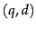 a score in the interval
, weighted zone scoring assigns to the pair 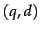 a score in the interval  , by computing a linear combination of zone scores, where each zone of the document contributes a Boolean value. More specifically, consider a set of documents each of which has 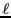 zones. Let
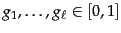 such that
, by computing a linear combination of zone scores, where each zone of the document contributes a Boolean value. More specifically, consider a set of documents each of which has 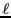 zones. Let
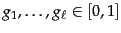 such that
 . For
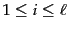, let 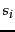 be the Boolean score denoting a match (or absence thereof) between
. For
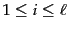, let 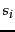 be the Boolean score denoting a match (or absence thereof) between  and the
and the  th zone. For instance, the Boolean score from a zone could be 1 if all the query term(s) occur in that zone, and zero otherwise; indeed, it could be any Boolean function that maps the presence of query terms in a zone to 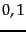. Then, the weighted zone score is defined to be
th zone. For instance, the Boolean score from a zone could be 1 if all the query term(s) occur in that zone, and zero otherwise; indeed, it could be any Boolean function that maps the presence of query terms in a zone to 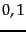. Then, the weighted zone score is defined to be
Worked example. Consider the query shakespeare in a collection in which each document has three zones: author, title and body. The Boolean score function for a zone takes on the value 1 if the query term shakespeare is present in the zone, and zero otherwise. Weighted zone scoring in such a collection would require three weights 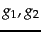 and 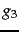, respectively corresponding to the author, title and body zones. Suppose we set 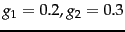 and 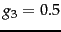 (so that the three weights add up to 1); this corresponds to an application in which a match in the author zone is least important to the overall score, the title zone somewhat more, and the body contributes even more.
Thus if the term shakespeare were to appear in the title and body zones but not the author zone of a document, the score of this document would be 0.8. End worked example.
How do we implement the computation of weighted zone scores? A simple approach would be to compute the score for each document in turn, adding in all the contributions from the various zones. However, we now show how we may compute weighted zone scores directly from inverted indexes. The algorithm of Figure 6.4 treats the case when the query  is a two-term query consisting of query terms 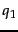 and 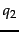, and the Boolean function is AND: 1 if both query terms are present in a zone and 0 otherwise. Following the description of the algorithm, we describe the extension to more complex queries and Boolean functions.
is a two-term query consisting of query terms 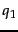 and 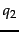, and the Boolean function is AND: 1 if both query terms are present in a zone and 0 otherwise. Following the description of the algorithm, we describe the extension to more complex queries and Boolean functions.
The reader may have noticed the close similarity between this algorithm and that in Figure 1.6 . Indeed, they represent the same postings traversal, except that instead of merely adding a document to the set of results for a Boolean AND query, we now compute a score for each such document. Some literature refers to the array scores[] above as a set of accumulators . The reason for this will be clear as we consider more complex Boolean functions than the AND; thus we may assign a non-zero score to a document even if it does not contain all query terms.